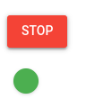
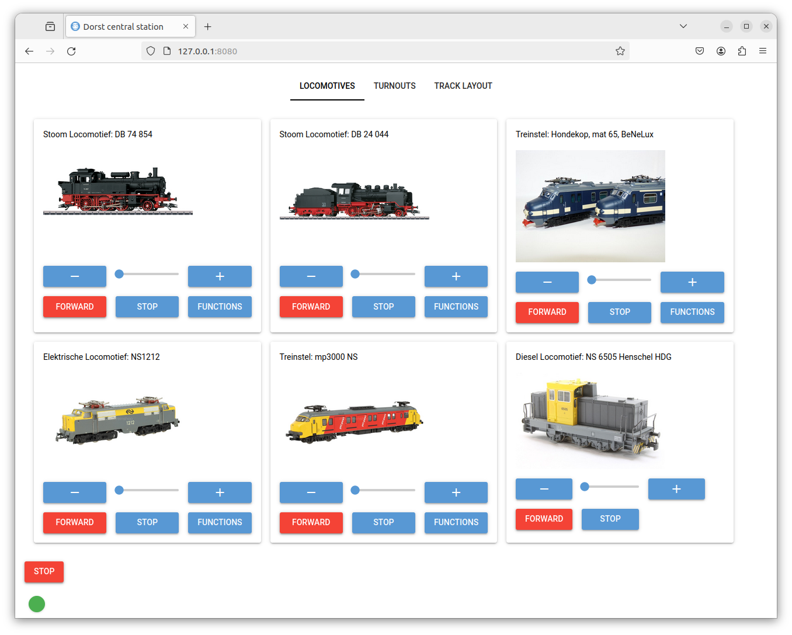
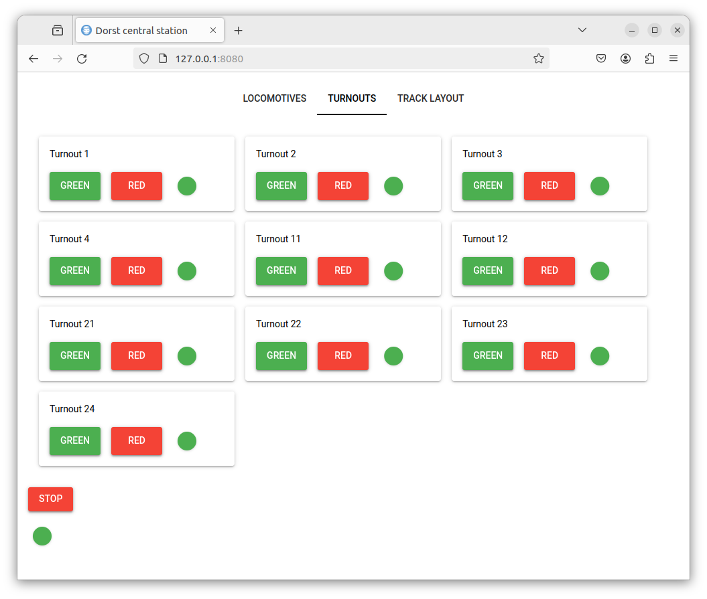
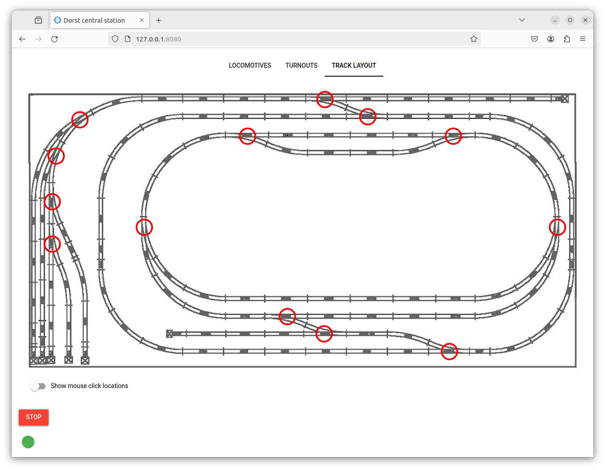

Setup nicegui User Interface
Under Construction
The user interface can be started in two ways:
Manualy:
ros2 launch railtrack_ui railtrack_ui.launch.py
Using script: run start_railtrack_gui.sh script in scripts directory of this repository.
cd ~/railtrack_ws/src/railtrack/scripts
./start_railtrack_gui.sh
Configuring the user interface
You can “tweak” the user interface according you wishes. Th only thing you have to do is editing the track_config.json file in the config directory of this repository. The most relevant json-objects are described below.
The user interface exists 3 tab’s. These tabs representate the main json-object. If the json-object not excists the tab is not displayed.
Common Controls & Indicators
At the bottom of the user interface there ar two items:
Stop/Enable knob: Controls the main power of the railtrack
Active LED: Indicates the connection activity between the user interface and the Marklin Railbox Bridge. In active state it flashes(if no Marklin Ralibox Bridge is used, this indicator has no function).

Locomotives tab

The locomotives are defined in de locomotives json-object. See track_config.json for the corresponding parameters.
Turnouts tab
 The turnouts are defined in de turnouts json-object. See track_config.json for the corresponding parameters.
Track Layout tab
 This tab is experimental. You can define the position of the turnouts in the layout_positions sub-json-object. To aquaiure the position by enabling the “Show mouse click location” See track_config.json for the corresponding parameters.
Alternative you can start the user interface by installing a Linux-service using the install_railtrack_gui_service.sh script in the linux_service directory of this repository (note: the user interface might not be running, abort with ctrl-C).
cd ~/railtrack_ws/src/railtrack/linux_service
./install_railtrack_gui_service.sh